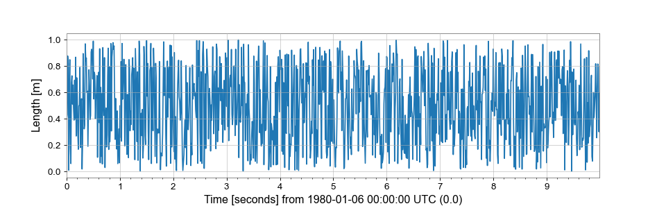

TimeSeries¶
-
class pydischarge.timeseries.TimeSeries(data, unit=
None, t0=None, dt=None, sample_rate=None, times=None, channel=None, name=None, **kwargs)[source]¶ A time-domain data array.
- Parameters¶
- valuearray-like
input data array
- unit
Unit, optional physical unit of these data
- t0
LIGOTimeGPS,float,str, optional GPS epoch associated with these data, any input parsable by
to_gpsis fine- dt
float,Quantity, optional time between successive samples (seconds), can also be given inversely via
sample_rate- sample_rate
float,Quantity, optional the rate of samples per second (Hertz), can also be given inversely via
dt- times
array-like the complete array of GPS times accompanying the data for this series. This argument takes precedence over
t0anddtso should be given in place of these if relevant, not alongside- name
str, optional descriptive title for this array
- channel
Channel,str, optional source data stream for these data
- dtype
dtype, optional input data type
- copy
bool, optional choose to copy the input data to new memory
- subok
bool, optional allow passing of sub-classes by the array generator
Notes
The necessary metadata to reconstruct timing information are recorded in the
epochandsample_rateattributes. This time-stamps can be returned via thetimesproperty.All comparison operations performed on a
TimeSerieswill return aStateTimeSeries- a boolean array with metadata copied from the startingTimeSeries.Examples
>>> from pydischarge.timeseries import TimeSeriesTo create an array of random numbers, sampled at 100 Hz, in units of ‘metres’:
>>> from numpy import random >>> series = TimeSeries(random.random(1000), sample_rate=100, unit='m')which can then be simply visualised via
>>> plot = series.plot() >>> plot.show()(
png) Attributes Summary
TView of the transposed array.
baseBase object if memory is from some other object.
cgsReturns a copy of the current
Quantityinstance with CGS units.channelInstrumental channel associated with these data
ctypesAn object to simplify the interaction of the array with the ctypes module.
dataPython buffer object pointing to the start of the array's data.
dtX-axis sample separation
dtypeData-type of the array's elements.
durationDuration of this series in seconds
dxX-axis sample separation
epochGPS epoch for these data.
equivalenciesA list of equivalencies that will be applied by default during unit conversions.
flagsInformation about the memory layout of the array.
flatA 1-D iterator over the Quantity array.
imagThe imaginary part of the array.
infoContainer for meta information like name, description, format.
isscalarTrue if the
valueof this quantity is a scalar, or False if it is an array-like object.itemsizeLength of one array element in bytes.
nameName for this data set
nbytesTotal bytes consumed by the elements of the array.
ndimNumber of array dimensions.
realThe real part of the array.
sample_rateData rate for this
TimeSeriesin samples per second (Hertz).shapeTuple of array dimensions.
siReturns a copy of the current
Quantityinstance with SI units.sizeNumber of elements in the array.
spanX-axis [low, high) segment encompassed by these data
stridesTuple of bytes to step in each dimension when traversing an array.
t0X-axis coordinate of the first data point
timesPositions of the data on the x-axis
unitThe physical unit of these data
valueThe numerical value of this instance.
x0X-axis coordinate of the first data point
xindexPositions of the data on the x-axis
xspanX-axis [low, high) segment encompassed by these data
xunitUnit of x-axis index
Methods Summary
abs(x, /[, out, where, casting, order, ...])Calculate the absolute value element-wise.
all([axis, out, keepdims, where])Returns True if all elements evaluate to True.
any([axis, out, keepdims, where])Returns True if any of the elements of
aevaluate to True.append(other[, inplace, pad, gap, resize])Connect another series onto the end of the current one.
argmax([axis, out, keepdims])Return indices of the maximum values along the given axis.
argmin([axis, out, keepdims])Return indices of the minimum values along the given axis.
argpartition(kth[, axis, kind, order])Returns the indices that would partition this array.
argsort([axis, kind, order])Returns the indices that would sort this array.
asd([fftlength, overlap, window, method])Calculate the ASD
FrequencySeriesof thisTimeSeriesastype(dtype[, order, casting, subok, copy])Copy of the array, cast to a specified type.
auto_coherence(dt[, fftlength, overlap, window])Calculate the frequency-coherence between this
TimeSeriesand a time-shifted copy of itself.average_fft([fftlength, overlap, window])Compute the averaged one-dimensional DFT of this
TimeSeries.bandpass(flow, fhigh[, gpass, gstop, fstop, ...])Filter this
TimeSerieswith a band-pass filter.byteswap([inplace])Swap the bytes of the array elements
choose(choices[, out, mode])Use an index array to construct a new array from a set of choices.
clip([min, max, out])Return an array whose values are limited to
[min, max].coherence(other[, fftlength, overlap, window])Calculate the frequency-coherence between this
TimeSeriesand another.coherence_spectrogram(other, stride[, ...])Calculate the coherence spectrogram between this
TimeSeriesand other.compress(condition[, axis, out])Return selected slices of this array along given axis.
conj()Complex-conjugate all elements.
conjugate()Return the complex conjugate, element-wise.
convolve(fir[, window])Convolve this
TimeSerieswith an FIR filter using thecopy([order])Return a copy of the array.
correlate(mfilter[, window, detrend, ...])Cross-correlate this
TimeSerieswith another signalcrop([start, end, copy])Crop this series to the given x-axis extent.
csd(other[, fftlength, overlap, window])Calculate the CSD
FrequencySeriesfor twoTimeSeriescsd_spectrogram(other, stride[, fftlength, ...])Calculate the cross spectral density spectrogram of this
cumprod([axis, dtype, out])Return the cumulative product of the elements along the given axis.
cumsum([axis, dtype, out])Return the cumulative sum of the elements along the given axis.
decompose([bases])Generates a new
Quantitywith the units decomposed.demodulate(f[, stride, exp, deg])Compute the average magnitude and phase of this
TimeSeriesonce per stride at a given frequencydetrend([detrend])Remove the trend from this
TimeSeriesdiagonal([offset, axis1, axis2])Return specified diagonals.
diff([n, axis])Calculate the n-th order discrete difference along given axis.
dot(b[, out])dump(file)Not implemented, use
.value.dump()instead.dumps()Returns the pickle of the array as a string.
ediff1d([to_end, to_begin])fetch(channel, start, end[, host, port, ...])Fetch data from NDS
fetch_open_data(ifo, start, end[, ...])Fetch open-access data from the LIGO Open Science Center
fft([nfft])Compute the one-dimensional discrete Fourier transform of this
TimeSeries.fftgram(fftlength[, overlap, window])Calculate the Fourier-gram of this
TimeSeries.fill(value)Fill the array with a scalar value.
filter(*filt, **kwargs)Filter this
TimeSerieswith an IIR or FIR filterfind(channel, start, end[, frametype, pad, ...])Find and read data from frames for a channel
find_gates([tzero, whiten, threshold, ...])Identify points that should be gates using a provided threshold and clustered within a provided time window.
flatten([order])Return a copy of the array collapsed into one dimension.
from_lal(lalts[, copy])Generate a new TimeSeries from a LAL TimeSeries of any type.
from_nds2_buffer(buffer_[, scaled, copy])Construct a new series from an
nds2.bufferobjectfrom_pycbc(pycbcseries[, copy])Convert a
pycbc.types.timeseries.TimeSeriesinto aTimeSeriesgate([tzero, tpad, whiten, threshold, ...])Removes high amplitude peaks from data using inverse Planck window.
get(channel, start, end[, pad, scaled, ...])Get data for this channel from frames or NDS
getfield(dtype[, offset])Returns a field of the given array as a certain type.
heterodyne(phase[, stride, singlesided])Compute the average magnitude and phase of this
TimeSeriesonce per stride after heterodyning with a given phase serieshighpass(frequency[, gpass, gstop, fstop, ...])Filter this
TimeSerieswith a high-pass filter.inject(other)Add two compatible
Seriesalong their shared x-axis values.insert(obj, values[, axis])Insert values along the given axis before the given indices and return a new
Quantityobject.is_compatible(other)Check whether this series and other have compatible metadata
is_contiguous(other[, tol])Check whether other is contiguous with self.
item(*args)Copy an element of an array to a scalar Quantity and return it.
itemset(*args)Insert scalar into an array (scalar is cast to array's dtype, if possible)
lowpass(frequency[, gpass, gstop, fstop, ...])Filter this
TimeSerieswith a Butterworth low-pass filter.mask([deadtime, flag, query_open_data, ...])Mask away portions of this
TimeSeriesthat fall within a given list of time segmentsmax([axis, out, keepdims, initial, where])Return the maximum along a given axis.
mean([axis, dtype, out, keepdims, where])Returns the average of the array elements along given axis.
median([axis])Compute the median along the specified axis.
min([axis, out, keepdims, initial, where])Return the minimum along a given axis.
nansum([axis, out, keepdims, initial, where])newbyteorder([new_order])Return the array with the same data viewed with a different byte order.
nonzero()Return the indices of the elements that are non-zero.
notch(frequency[, type, filtfilt])Notch out a frequency in this
TimeSeries.override_unit(unit[, parse_strict])Forcefully reset the unit of these data
pad(pad_width, **kwargs)Pad this series to a new size
partition(kth[, axis, kind, order])Rearranges the elements in the array in such a way that the value of the element in kth position is in the position it would be in a sorted array.
plot([method, figsize, xscale])Plot the data for this timeseries
prepend(other[, inplace, pad, gap, resize])Connect another series onto the start of the current one.
prod([axis, dtype, out, keepdims, initial, ...])Return the product of the array elements over the given axis
psd([fftlength, overlap, window, method])Calculate the PSD
FrequencySeriesfor thisTimeSeriesptp([axis, out, keepdims])Peak to peak (maximum - minimum) value along a given axis.
put(indices, values[, mode])Set
a.flat[n] = values[n]for allnin indices.q_gram([qrange, frange, mismatch, snrthresh])Scan a
TimeSeriesusing the multi-Q transform and return anEventTableof the most significant tilesq_transform([qrange, frange, gps, search, ...])Scan a
TimeSeriesusing the multi-Q transform and return an interpolated high-resolution spectrogramravel([order])Return a flattened array.
rayleigh_spectrogram(stride[, fftlength, ...])Calculate the Rayleigh statistic spectrogram of this
TimeSeriesrayleigh_spectrum([fftlength, overlap, window])Calculate the Rayleigh
FrequencySeriesfor thisTimeSeries.read(source, *args, **kwargs)Read data into a
TimeSeriesrepeat(repeats[, axis])Repeat elements of an array.
resample(rate[, window, ftype, n])Resample this Series to a new rate
reshape(shape[, order])Returns an array containing the same data with a new shape.
resize(new_shape[, refcheck])Change shape and size of array in-place.
rms([stride])Calculate the root-mean-square value of this
TimeSeriesonce per stride.round([decimals, out])Return
awith each element rounded to the given number of decimals.searchsorted(v[, side, sorter])Find indices where elements of v should be inserted in a to maintain order.
setfield(val, dtype[, offset])Put a value into a specified place in a field defined by a data-type.
setflags([write, align, uic])Set array flags WRITEABLE, ALIGNED, WRITEBACKIFCOPY, respectively.
shift(delta)Shift this
Seriesforward on the X-axis bydeltasort([axis, kind, order])Sort an array in-place.
spectral_variance(stride[, fftlength, ...])Calculate the
SpectralVarianceof thisTimeSeries.spectrogram(stride[, fftlength, overlap, ...])Calculate the average power spectrogram of this
TimeSeriesusing the specified average spectrum method.spectrogram2(fftlength[, overlap, window])Calculate the non-averaged power
Spectrogramof thisTimeSeriessqueeze([axis])Remove axes of length one from
a.std([axis, dtype, out, ddof, keepdims, where])Returns the standard deviation of the array elements along given axis.
step(**kwargs)Create a step plot of this series
sum([axis, dtype, out, keepdims, initial, where])Return the sum of the array elements over the given axis.
swapaxes(axis1, axis2)Return a view of the array with
axis1andaxis2interchanged.take(indices[, axis, out, mode])Return an array formed from the elements of
aat the given indices.taper([side, duration, nsamples])Taper the ends of this
TimeSeriessmoothly to zero.to(unit[, equivalencies, copy])Return a new
Quantityobject with the specified unit.to_lal()Convert this
TimeSeriesinto a LAL TimeSeries.to_pycbc([copy])Convert this
TimeSeriesinto a PyCBCTimeSeriesto_string([unit, precision, format, subfmt])Generate a string representation of the quantity and its unit.
to_value([unit, equivalencies])The numerical value, possibly in a different unit.
tobytes([order])Not implemented, use
.value.tobytes()instead.tofile(fid[, sep, format])Not implemented, use
.value.tofile()instead.tolist()Return the array as an
a.ndim-levels deep nested list of Python scalars.tostring([order])Construct Python bytes containing the raw data bytes in the array.
trace([offset, axis1, axis2, dtype, out])Return the sum along diagonals of the array.
transfer_function(other[, fftlength, ...])Calculate the transfer function between this
TimeSeriesand another.transpose(*axes)Returns a view of the array with axes transposed.
update(other[, inplace])Update this series by appending new data from an other and dropping the same amount of data off the start.
value_at(x)Return the value of this
Seriesat the givenxindexvaluevar([axis, dtype, out, ddof, keepdims, where])Returns the variance of the array elements, along given axis.
view([dtype][, type])New view of array with the same data.
whiten([fftlength, overlap, method, window, ...])Whiten this
TimeSeriesusing inverse spectrum truncationwrite(target, *args, **kwargs)Write this
TimeSeriesto a filezip()Zip the
xindexandvaluearrays of thisSerieszpk(zeros, poles, gain[, analog])Filter this
TimeSeriesby applying a zero-pole-gain filterAttributes Documentation
Methods Documentation
{kind=link}